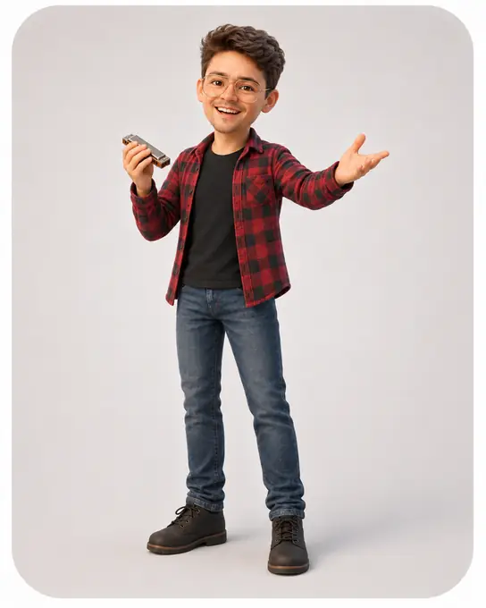

Creative producer & builder
I can take your
vision and fantasies
and make them
a reality.
I build websites, edit audio and video, make music, and create practical systems. Bring the idea or rough direction. I’ll help make it work.
What I do
Start with the service you need.
See work I’ve already done, then decide what you want to build.

Websites
I design and build clearer websites with better navigation and visitor paths.
See website examples
Social Media
I edit campaign videos and social content for shows, classes, launches, and promotions.
See social media examples
Audio Editing
I turn songs, references, and creative direction into clean edits, mixes, and performance-ready audio.
Hear audio examples
Video Editing
I edit showreels, performance videos, band promos, campaign videos, and personal projects.
See video examples
Live Music
I perform solo and with Rooftop Ramblers for venues, events, and programs.
See performance examples
NYC Field Work
I research locations, vendors, and options on the ground in New York City.
See NYC field work



About Andrew
I turn ideas into websites, media, music, programs, and systems.
I work across creative direction, websites, music, campaigns, education programs, live events, and the systems that keep them moving.
More about Andrew